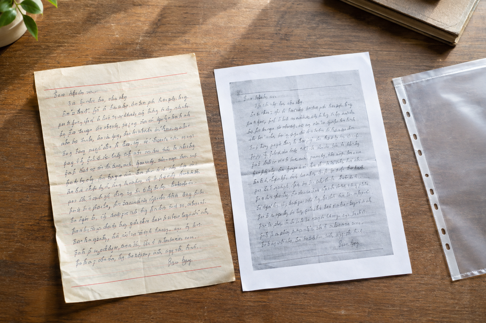

西安资料只有复印件时，原始手写照片该怎么对应
复印件便于传阅，却常常丢失纸张质感和浅色笔画。

先找对应页
西安笔迹鉴定资料若同时有复印件和手机原图，可以按文件名称、页码、边缘折痕对应。不要因为局部字像就认定两张图来自同一页。
说明每份材料的身份
原件照片、复印扫描和裁切近照分开命名。模仿笔迹长文需要整页布局，模仿签名、模仿签字则要同时看到落款位置和笔画细节。
缺失信息留空
找不到拍摄日期或原件来源时，直接标注“未核实”。把不确定的事情写成确定事实，会影响后续比较；补到新材料后再更新对应清单。